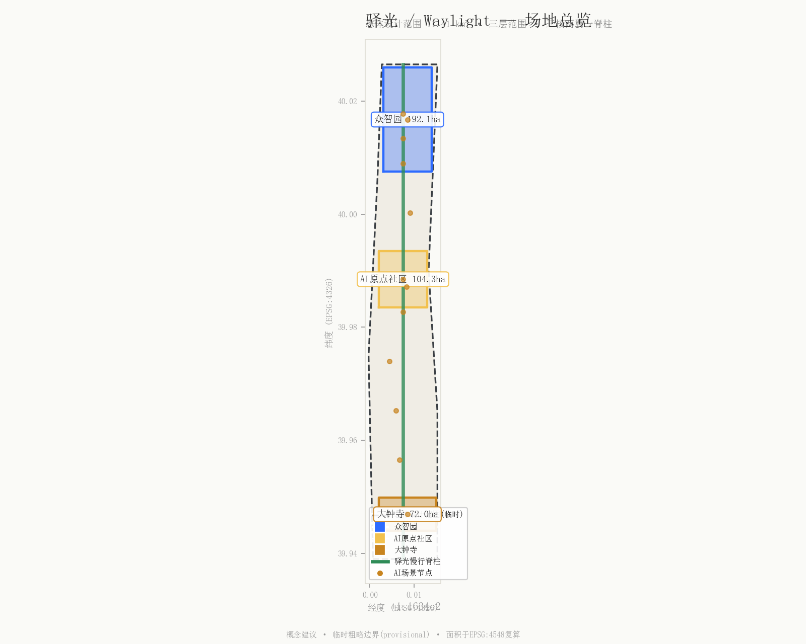
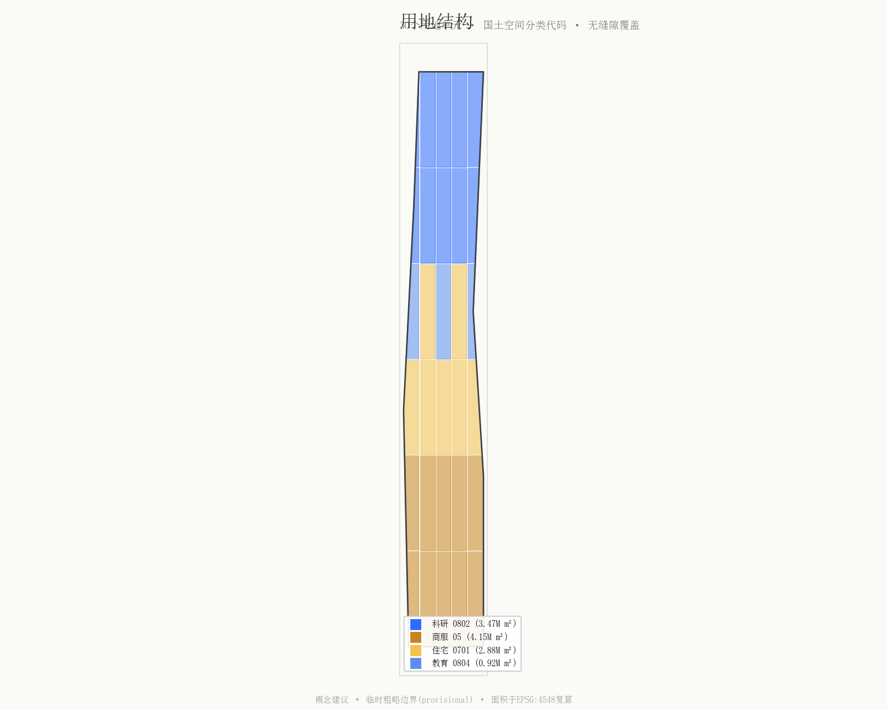
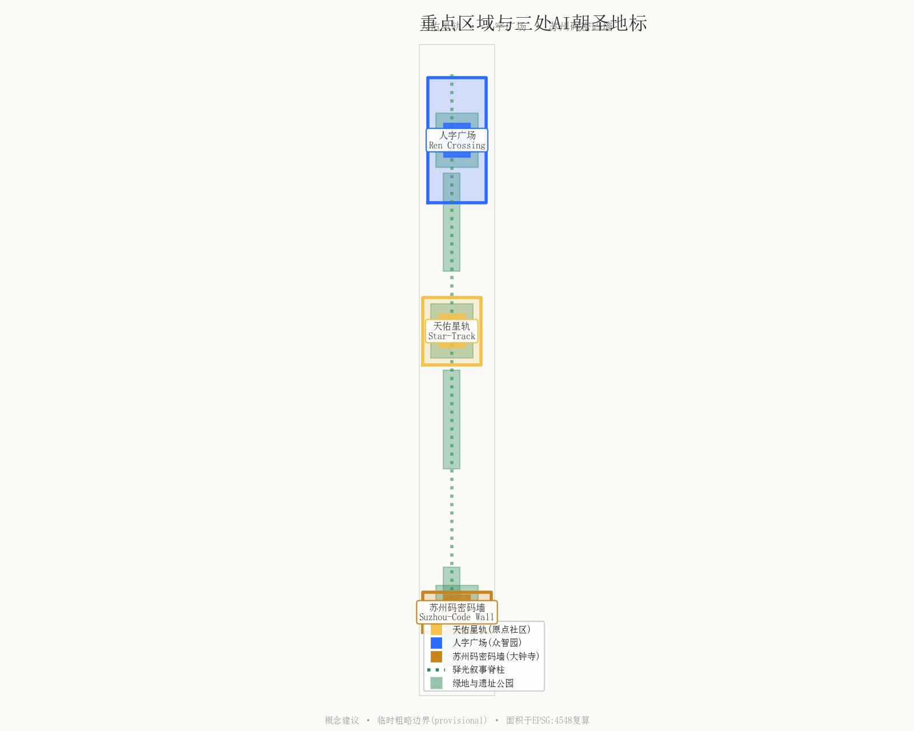
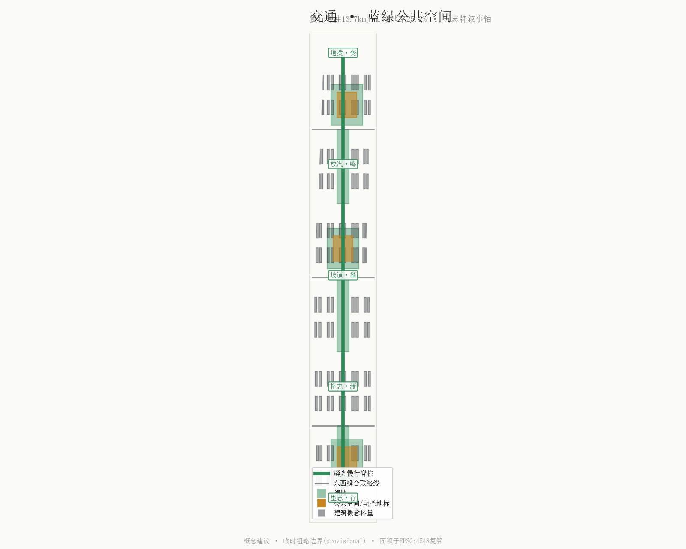
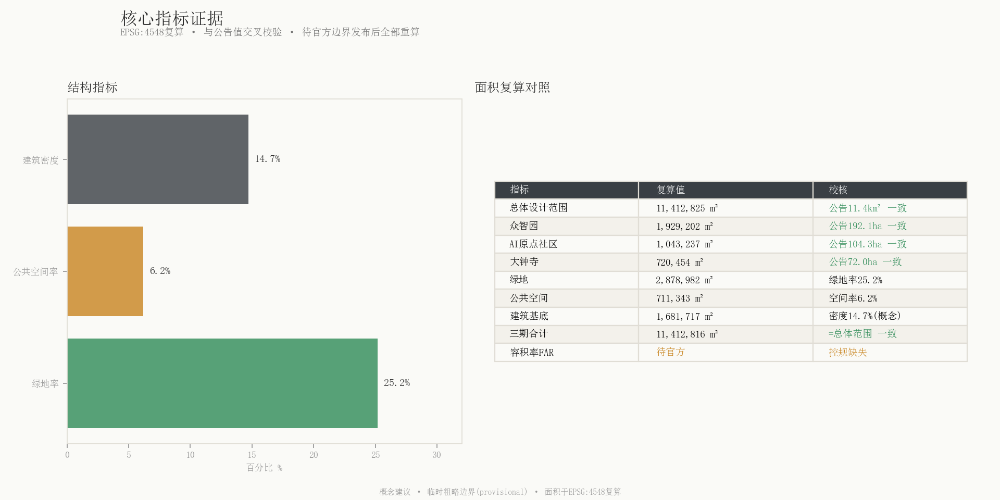

title: "驿光 / Waylight — 让百年钢轨通向AI"
author_github: "AuroraIsHappy"
language: "zh"
proposal_format_version: "2"
bilingual_contract_version: "1"
translation_file: "proposal.en.md"
tags: ["heritage", "ai-scenario", "brand", "mechanism", "landscape"]
lead_agent: "builtin:bigmodel-coding-plan/GLM-5.2"
package_type: "professional_design_package"
package_state: "ready_for_review"
layout: "deck-report"
一句话立意：老京张用「人字折返」和「苏州码子」宣告了中国铁路的自主；驿光带用同一套符号，让中国 AI 继续「自佑、自驱、为人」。
1909 年，詹天佑在青龙桥用一处「人」字形折返线，把世界「中国人造不出铁路」的傲慢翻成了历史；同年，他在每一块里志牌、桥志牌上刻下「苏州码子」——一套源自江南商埠的中国数字——以此宣示这条路的「中国血统」。一百一十七年后，在同一条廊道上，海淀要建一条全球 AI 创新带。本方案「驿光 / Waylight」做的，不是给科技园贴一张铁路纹样贴纸，而是把京张铁路三个最有辨识度的母题——人字折返线（人本）、苏州码子（中国身份）、号志灯（光的谱系）——升华为整套带的命名、视觉、空间与叙事系统，让历史成为驱动未来的语法，而非橱窗里的标本。
本方案基于公开征集公告、面向智能体的任务书与场地资料包生成 OFFICIAL-ANNOUNCEMENT AGENT-TASKBOOK。三层范围与三处重点区域的面积以官方公告约值为准，目前仅有临时粗略边界（provisional constraint），所有面积指标已在 EPSG:4548 下复算，待官方精确边界发布后须重新计算 geometry/site_boundary.geojson#SITE-001 SITE-PACKAGE。
京张铁路历史文化母题（詹天佑、人字铁路、青龙桥站、苏州码子、号志灯）取自国家铁路局、中国铁路与新华网等公开资料，作为文化叙事与朝圣地标的设计灵感来源，不作为法定文保范围依据 SRC-JINGZHANG-HISTORY A-HERITAGE-001。控规条件（容积率、建筑高度、建筑密度、绿地率、退线）在公开资料包中缺失，方案中一切涉及强度与高度的内容均为概念建议，待官方附件确认后方可深化 A-CONTROLS-001。

本方案严格遵守「统筹研究范围（43.6 km²）— 总体设计范围（11.4 km²）— 重点区域（368.4 ha）」三层体系 geometry/site_boundary.geojson#SITE-001 geometry/key_areas.geojson#KEY-ZZY。总体设计范围面积复算为 11,412,825 m²，与公告约 11.4 km² 一致 site_area_sqm。三处重点区域自北向南依次为：众智园 AI 自主创新加速区（192.1 ha）、北京 AI 原点社区（104.3 ha）、大钟寺 AI 产业集聚区（72.0 ha），面积复算均与公告值吻合 key_area_count key_area_area_zhongzhiyuan_sqm。
「驿光」叙事脊柱沿老京张铁路廊道由北向南贯穿三层范围，将三个重点区域串为一条可步行的故事长卷。这条脊柱既是物理上的慢行绿道，也是时间上的轴线——北端锚定 1909（铁路原点），中部锚定 1980s（中关村电子一条街），南端指向 2026（AI 带），形成一条「自主创新百年轴」。

在 43.6 km² 统筹研究范围内，本方案提出「三带叠合」的区域协同叙事：百年京张文化带（历史的自主创新）、中关村创新脉络带（改革开放后的市场化创新）、AI 融合创新带（面向未来的智能原生创新）。三带共享同一条南北廊道，形成代际接力的空间结构 AGENT-TASKBOOK。
中关村科技服务翼提供 IP、资本与全球化要素配置，小月河场景赋能翼提供 AI 场景落地与城市活力测试。两翼通过「驿光」慢行脊柱与三核相连，构成「三核两翼一脊柱」的协同回路 A-DATA-001。本节的区域产业判断基于公开案例参考，不构成对企业入驻、投资额或财政承诺的确定性结论。
总体设计范围（11.4 km²）被划分为 30 个用地单元，采用国土空间用地用海分类指南的可校验代码，无缝覆盖、相邻多边形共享边界坐标 geometry/land_use.geojson#LU-001 MNR-LAND-USE-CLASSIFICATION-GUIDE。用地结构以科研用地（0802，346.6 万 m²）为创新核心，商业服务业用地（05，414.9 万 m²）承载大钟寺智能原生消费，城镇住宅用地（0701，288.1 万 m²）与教育用地（0804，91.8 万 m²）保障人才社区 land_use_area_0802_sqm land_use_area_05_sqm。
绿地与开敞空间面积 287.9 万 m²，绿地率 25.2%；公共空间（三处朝圣地标广场）71.1 万 m²，公共空间率 6.2% green_ratio public_space_ratio。建筑概念基底面积 168.2 万 m²，建筑密度 14.7%——需要强调这是概念体量研究，非测绘基底，更非法定密度 building_density A-CONTROLS-001。
用地采用「留白用地」策略：在三个重点区域之间预留可变空间，以「道拨牌」概念对应——正如道岔代表铁路时代的路径选择，留白代表 AI 时代的弹性应对 land_use_and_building_scale。
众智园是「AI 全栈自主创新体系」的落点。本方案在此布置「人字广场」（Ren Crossing）——以人字形折返铺装为核心的空间，交汇点设「AI 伦理放行灯」。广场承载自主算力、AI 治理与开源发布的公共仪式 geometry/public_space.geojson#PS-02。「人字」在此被赋予双重含义：既是詹天佑的工程创举，也是「AI 服务于人」的人本宣言 A-CULTURE-001。
原点社区是「世界级 AI 创新生态」的核心。本方案在此布置「天佑星轨」（Tianyou Star-Track）——一座具有日晷与天文意味的朝圣地标，锚定 1909→∞ 的时间轴。星轨既是荣誉墙（镌刻贡献者姓名，呼应共创原则「贡献可记忆」），也是晨光集会点 geometry/public_space.geojson#PS-01 SRC-JINGZHANG-HISTORY。每日清晨的「放汽晨鸣」环境声仪式在此启动，呼应蒸汽机车离站鸣笛的历史记忆。
大钟寺是「智能原生新业态」的消费与商务入口。本方案在此布置「苏州码密码墙」（Suzhou-Code Wall）——一面可交互的苏州码光影墙，把全线地址、客流与数据流「译码」为可视化的中国数字 geometry/public_space.geojson#PS-03。这面墙既是消费场景的入口标识，也是国际传播的超级符号——全世界独此一家的「用中国数字做寻路系统」的 AI 带。

本方案参考 6 个全球 AI 创新生态案例作为众智园全栈体系与国际传播的参照（均为公开资料，非招商承诺）CASE-STANFORD-SILICON-VALLEY A-DATA-001：
| 案例 | 参照价值 | 驿光转译 |
|---|---|---|
| 斯坦福-硅谷 | 校园-产业-资本共生 | 原点社区-中关村翼的学产协同 |
| 新加坡 One-North | 多园区簇群 + 场景测试 | 三核两翼的簇群 + 小月河场景翼 |
| 深圳南山 | 政企协同 + 硬件全栈 | 众智园算力-数据-模型全栈 |
| 杭州城西科创 | 大走廊串联多节点 | 驿光脊柱串联三核 |
| 法国 Station F | 集约化创业容器 | 大钟寺智能原生业态聚落 |
| 日本柏叶 | 智慧城市Living Lab | 小月河场景赋能翼测试 |
12 张场景卡以号志灯三色命名，对应三种 AI 服务类型，沿驿光脊柱由北向南布置 geometry/constraints.geojson#SCN-01 ai_scenario_node_count：
三个产业测试场景统一以「前拉后推」双机编组隐喻描述人机边界——正如关沟段蒸汽机车前拉后推以攻克陡坡，AI 场景中「人领航（前拉）+ AI 助推（后推）」A-SCENARIO-001：
1. 众智园自主算力测试场：国产大模型推理-训练一体化测试，人工设定安全边界（前拉），AI 自主优化调度（后推）
2. 小月河多智能体交通测试：无人配送 + 慢行优先，人类调度员保留最高优先权
3. 大钟寺智能原生消费测试：无感支付 + 隐私沙箱，消费者可随时退出数据采集
| 画像 | 核心诉求 | 驿光对应 |
|---|---|---|
| AI 研究者 | 算力、同行交流、长期主义 | 众智园 + 天佑大会 |
| 创业者 | 低成本空间、场景、资本 | 大钟寺 + 中关村翼 |
| 高校学生 | 实习、社交、可负担生活 | 原点社区 + 1435 步道 |
| 海淀居民 | 公共空间、文化归属、不被监控 | 遗址公园 + 放汽晨鸣 + 隐私边界 |
| 国际访客 | 可感知的中国创新故事 | 苏州码墙 + 五志牌叙事轴 |

用地划分以 30 个用地单元覆盖总体设计范围，相邻多边形共享边界，无空洞无重叠 geometry/land_use.geojson land_use_and_building_scale。建筑概念体量为创新混合型组团，基底面积 168.2 万 m²，旨在表达「中等密度、高活力」的 AI 社区形态，而非给出法定容积率 building_footprint_area_sqm A-CONTROLS-001。
「拆改留」策略以概念建议表述：遗址公园沿线老站房（清华园站等）建议「留」为记忆锚点；沿线低效产业空间建议「改」为 AI 场景载体；重点区域间留白建议「新」建为弹性创新空间。所有具体地块的拆改留结论须由专业团队结合权属与文保核实，本方案不替代法定判断 MOHURD-CONTROL-DETAILED-PLANNING。
道路系统以「驿光慢行脊柱」（RD-SPINE）为核心，南北贯穿遗址公园，辅以三条东西向缝合联络线，总长 13,713 m geometry/roads.geojson#RD-SPINE road_length_m。慢行优先：脊柱限速、步行与骑行专用，机动车在东西联络线行驶。
新型基础设施以「光的谱系」隐喻统筹：煤油琥珀（生活照明）、旗语绿（放行指示）、数据蓝（AI 传感）三色光网沿脊柱布置，既是夜游导引，也是城市数据采集的可见化表达 A-SCENARIO-001。具体轨道线位、市政管线与工程可行性不在本方案结论范围内。
蓝绿系统以京张铁路遗址公园为脊柱，串联三处重点区域中央公园，绿地总面积 287.9 万 m² geometry/green_space.geojson green_space_area_sqm。公共空间以三处朝圣地标广场为锚点，辅以「道拨可变家具」网络——可翻转、可重组的城市家具，象征 AI 时代的路径选择弹性 blue_green_public_space。
城市风貌遵循《城市设计管理办法》的要求，统筹建筑高度、体量、风格与色彩 MOHURD-URBAN-DESIGN-MEASURES。色系采用「光的谱系」：煤油琥珀 #C8841F、旗语绿 #2E8B57、钢轨铁灰 #3A3F44、数据蓝 #2D6BFF、天佑晨光金 #F2C14E。
分期以「北-中-南」三段梯次推进，三期面积之和精确等于总体设计范围面积，无缝覆盖、无重叠 geometry/phasing.geojson#PH-1 phase_area_phase_1_sqm：
| 期 | 名称 | 面积 | 时段（概念） |
|---|---|---|---|
| 一期 | 北段·众智园先导 | 346.6 万 m² | 2026-2028 |
| 二期 | 中段·原点社区核心 | 379.8 万 m² | 2028-2030 |
| 三期 | 南段·大钟寺产业 | 414.9 万 m² | 2030-2032 |
时段为概念性建议，不构成政府审批的开发时序结论 A-OPS-001。
| 指标 | 值 | 单位 | 置信度 |
|---|---|---|---|
| 总体设计范围面积 | 11,412,825 | m² | 高（临时边界） |
| 绿地率 | 25.2% | — | 中 |
| 公共空间率 | 6.2% | — | 中 |
| 建筑密度 | 14.7% | — | 低（概念体量） |
| 重点区域数 | 3 | 个 | 高 |
| AI 场景节点数 | 12 | 个 | 高 |
| 容积率 | 待官方数据 | — | 待确认 |
全部面积在 EPSG:4548（CGCS2000 / 3 度带中央经线 117°E）下复算 site_area_sqm indicators_and_compliance。容积率、总建筑面积等指标因官方控规缺失标记为 unknown，待官方附件确认 floor_area_ratio。

本方案逐项响应 6 项强制专业标准 PROJECT-OFFICIAL-ANNOUNCEMENT PROJECT-AGENT-OPEN-CALL-TASKBOOK。用地分类严格采用《国土空间调查、规划、用途管制用地用海分类指南》的可校验代码 MNR-LAND-USE-CLASSIFICATION-GUIDE。控规相关内容均区分「已确认」与「待确认」，不以概念建议替代法定判断 MOHURD-CONTROL-DETAILED-PLANNING。城市风貌统筹遵循《城市设计管理办法》 MOHURD-URBAN-DESIGN-MEASURES。建筑专业深度参照《建筑工程设计文件编制深度规定》，在取得官方文件前不将非官方镜像作为 formal 权威 MOHURD-ARCH-DESIGN-DEPTH-2016。
全部 10 项设计深度要求均为 complete，证据链贯穿 GeoJSON、metrics 与正文 existing_conditions_diagnosis overall_urban_design。
主名称「驿光 / Waylight」——「驿」取古代驿站聚合停泊之意（铁路站的前世意象），「光」从号志灯延伸至 AI 数据光；驿光 = 每一站都是一束光。英文 Waylight = way（引路）+ light（光），国际可读 A-CULTURE-001。
Logo 方向：取「人」字折返线为母形——一个 Y 形交汇点，既像铁轨分叉，又像一个站起的「人」；交汇点嵌一粒光点（号志灯）。
命名体系：全线门牌、公里桩、区段编号、桥号一律采用现代演绎的「苏州码子」，配阿拉伯数字副注——全世界独此一家的「用中国数字做寻路系统」的 AI 带，直接呼应「AI 治理全球话语权」。
模数：以标准轨距 1435mm 作为铺装带、长椅、雨水花园的基准模数——「踩在轨距上行走」。
三大定位（百年京张文化带 / 都市 AI 生活体验带 / AI 融合创新带）由驿光脊柱三带叠合承载；五大功能（全栈自主创新 / 世界级生态 / 场景赋能 / 活力城市 / 全球话语权）由三核两翼分别落点 AGENT-TASKBOOK。
众智园承载「AI 全栈自主创新体系」——从国产芯片算力、自有数据集、基础大模型到行业应用的全链条，以「人字广场」为发布与治理仪式空间。中关村科技服务翼提供 IP、资本与全球化配置 ai_ecosystem_and_scenario。6 个国际案例（见 6.1 节）为参照，不构成招商承诺 A-DATA-001。
12 张场景卡（见 6.2 节）以号志灯三色分类，沿脊柱布置 geometry/constraints.geojson#SCN-01。3 个产业测试场景与 5 类用户画像（见 6.3-6.4 节）以「前拉后推」人机协同隐喻统一表述隐私与人工复核边界 A-SCENARIO-001。
三处 AI 朝圣地标——「天佑星轨」「人字广场」「苏州码密码墙」——分别锚定原点社区、众智园与大钟寺 geometry/public_space.geojson#PS-01。荣誉展示体系呼应共创原则「贡献可记忆」：星轨荣誉墙镌刻开发者、贡献者与里程碑，成为可生长的公共记忆 AGENT-TASKBOOK。公共空间组件库包含「道拨可变家具」「1435 模数长椅」「五志牌导视柱」三组可复制组件。
本方案将詹天佑的五类路标重写为五个空间叙事章节，沿遗址公园由北向南展开——「五志牌」五章 SRC-JINGZHANG-HISTORY：
| 章节 | 母题 | 空间表达 |
|---|---|---|
| 里志·**行** | 里程 / 速度 35km→AI | 1909 时间轴地刻，步道每 1435mm 一刻度 |
| 桥志·**渡** | 桥梁 / 缝合 | 东西缝合天桥群，桥号用苏州码 |
| 坡道·**攀** | 人字折返 / 攻坚 | 人字折返坡道广场，「前拉后推」双机雕塑 |
| 放汽·**鸣** | 鸣笛 / 声音 | 沿线声音雕塑，每日清晨「放汽」环境声仪式 |
| 道拨·**变** | 道岔 / 选择 | 可变公共空间，象征 AI 时代的路径选择 |
导视与符号系统以现代演绎的苏州码子为视觉 DNA，区别于一带整体 Logo 系统（人字 Y 形）——文化标识服务于寻路与叙事，Logo 服务于品牌 A-CULTURE-001。中关村创新脉络（1980s 电子一条街→2026 AI 带）作为时间轴的第二锚点，融入「自主创新百年轴」叙事。
年度活动「驿光节」：含「放汽晨鸣」开场（环境声仪式）、苏州码城市解谜跑（公众参与）、开发者「天佑大会」（行业峰会）。活动品牌与传播视觉沿用「光的谱系」色系与苏州码符号 A-OPS-001。
开发者社区运营机制：开源贡献可记忆（星轨荣誉墙）、场景开放可测试（小月河翼）、算力可申请（众智园）。转化路径：研究者→创业者（大钟寺孵化）、学生→人才（原点社区）、访客→传播者（苏州码墙）。所有活动与机制均为设想，非已确定政府安排 A-OPS-001。
本方案全部空间落地建议均为概念建议、参考方案或可供专业团队深化研究，不替代正式规划，不构成政府审定结论 AGENT-TASKBOOK。具体风险与边界如下：
本方案不使用任何非公开政府数据、企业内部数据或个人隐私数据，所有内容均来自公开或已清权来源 SOURCE-REGISTRY。